A theoretical and applied walkthrough of ordinal regression. Part 2: the Bayesian approach with brms.
knitr::opts_chunk$set(echo = TRUE)
library(tidyverse)
library(dunnr)
library(gt)
library(broom)
library(broom.mixed)
library(patchwork)
extrafont::loadfonts(device = "win", quiet = TRUE)
theme_set(theme_td())
set_geom_fonts()
set_palette()
wine_red <- "#58181F"
update_geom_defaults("point", list(color = wine_red))
update_geom_defaults("line", list(color = wine_red))
This is part 2 of me learning ordinal regression in R. Previously, I took the frequentist approach with the ordinal package. Here, I’ll use brms package to fit Bayesian mixed models via Stan.
Though I won’t be reproducing their examples, Bürkner and Vuorre (2019) give a great tutorial of using brms for ordinal regression models. It also frames the cumulative model in the terms of a latent (not observable) continuous variable \(\tilde{y}\), which has been categorized into the observed ordinal variable \(y\). I found this way of thinking very intuitive, and it helped make a lot of the concepts click.
This post also serves as practice in Bayesian inference, so I’ll be comparing the results here to those from part 1, and explore different choices of prior distributions.
Load brms, tidybayes and the wine data from Randall (1989) that was analyzed in part 1.
I will be fitting these models of wine bitterness ratings:
\[ \begin{align} \text{logit}(p(y_i \leq j)) &= \theta_j - u( \text{judge}_i) \\ \text{logit}(p(y_i \leq j)) &= \theta_j - \beta_1 \text{temp}_i - \beta_2 \text{contact}_i - u( \text{judge}_i) \\ \end{align} \]
where \(p(y_i \leq j)\) is the probability of a rating less than or equal to \(j\), \(\theta_j\) are the thresholds for the \(J-1 = 4\) levels, \(u(\text{judge}_i)\) are judge-specific random effects, and \(\beta_1\) and \(\beta_2\) are fixed effect coefficients for \(\text{temp}_i\) and \(\text{contact}_i\). (see part 1 for more details).
f_rating_null <- rating ~ 1 + (1|judge)
f_rating_contact_temp <- rating ~ 1 + contact + temp + (1|judge)
We will start with the “null” model, with just thresholds and random effects. The default priors for this model are:
get_prior(f_rating_null, data = wine, family = cumulative("logit"))
prior class coef group resp dpar nlpar bound
student_t(3, 0, 2.5) Intercept
student_t(3, 0, 2.5) Intercept 1
student_t(3, 0, 2.5) Intercept 2
student_t(3, 0, 2.5) Intercept 3
student_t(3, 0, 2.5) Intercept 4
student_t(3, 0, 2.5) sd
student_t(3, 0, 2.5) sd judge
student_t(3, 0, 2.5) sd Intercept judge
source
default
(vectorized)
(vectorized)
(vectorized)
(vectorized)
default
(vectorized)
(vectorized)\[ \begin{align} \text{logit}(p(y_i \leq j)) &= \theta_j - u( \text{judge}_i) \\ \theta_j &\sim \text{Student-}t(3, 0, 2.5) \\ u(\text{judge}_i) &\sim \text{Normal}(0, \sigma_u) \\ \sigma_u &\sim \text{Student-} t(3, 0, 2.5) \end{align} \]
Fit the model:
brm_rating_null <-
brm(
f_rating_null,
data = wine,
family = cumulative("logit"),
sample_prior = TRUE,
file = "brm-rating-null"
)
Visualize the two priors (on thresholds/Intercepts, and on SD of judge effects) with brms:prior_samples:
prior_draws(brm_rating_null) %>%
pivot_longer(cols = everything(), names_to = "term", values_to = "value") %>%
mutate(samples = "model prior samples") %>%
ggplot(aes(x = value, y = samples, fill = samples)) +
geom_violin() +
# Also visualize some random samples from the t-distribution for comparison
geom_violin(
data = tibble(
value = rstudent_t(n = 4000, df = 3, mu = 0, sigma = 2.5),
samples = "student_t(3, 0, 2.5)", term = "Intercept"
)
) +
geom_violin(
data = tibble(
value = abs(rstudent_t(n = 4000, df = 3, mu = 0, sigma = 2.5)),
samples = "abs(student_t(3, 0, 2.5))", term = "sd_judge"
)
) +
labs(y = NULL) +
facet_wrap(~term, scales = "free_x") +
coord_cartesian(xlim = c(-15, 15)) +
theme(legend.position = "none") +
add_facet_borders()
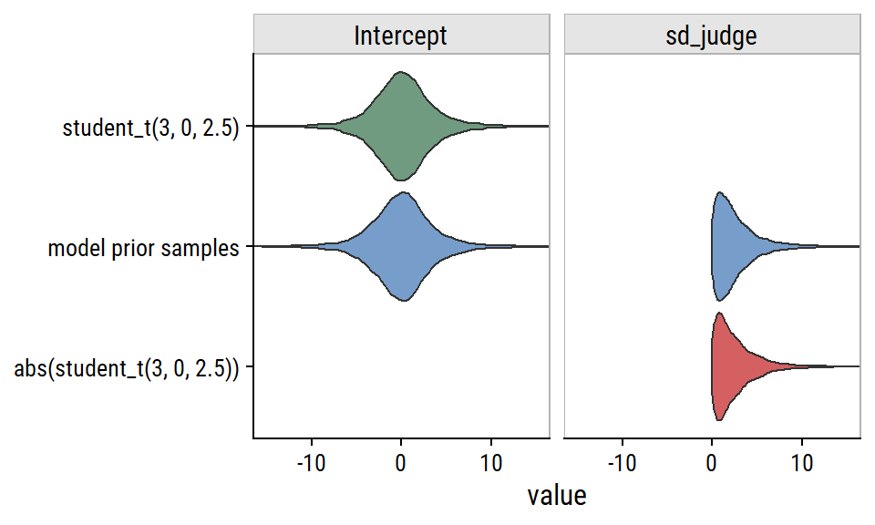
Note that, since a standard deviation can’t be negative, brms automatically takes the absolute value of the default student_t(3, 0, 2.5) prior.
These priors aren’t terrible. For instance, intercepts (the thresholds \(\theta_j\)) between -10 and +10 correspond to the following probabilities:
tibble(theta = seq(-10, 10)) %>%
mutate(p = inv_logit_scaled(theta)) %>%
ggplot(aes(x = theta, y = p)) +
geom_line(size = 1)
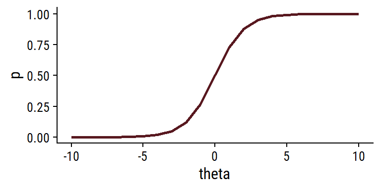
Any prior values outside of this range would essentially zero cumulative probability for a level \(\leq j\).
Now that we’ve thought about our (default) prior assumptions, investigate the chains:
plot(brm_rating_null, ask = FALSE,
# Only plot specified variables
variable = "^b_|^sd_", regex = TRUE)
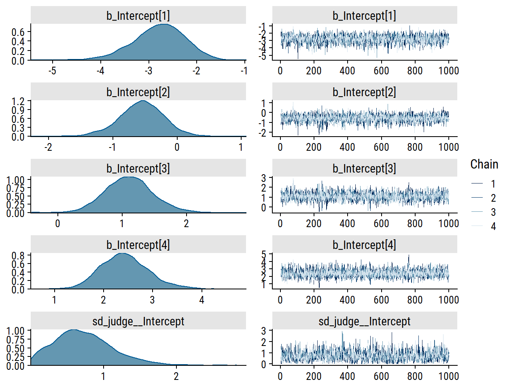
The intercept trace plots look good to me. There are some spikes in sd_judge__Intercept, but not enough to be concerning.
Print the model estimates:
brm_rating_null
Family: cumulative
Links: mu = logit; disc = identity
Formula: rating ~ 1 + (1 | judge)
Data: wine (Number of observations: 72)
Draws: 4 chains, each with iter = 2000; warmup = 1000; thin = 1;
total post-warmup draws = 4000
Group-Level Effects:
~judge (Number of levels: 9)
Estimate Est.Error l-95% CI u-95% CI Rhat Bulk_ESS
sd(Intercept) 0.73 0.41 0.07 1.64 1.00 1339
Tail_ESS
sd(Intercept) 1614
Population-Level Effects:
Estimate Est.Error l-95% CI u-95% CI Rhat Bulk_ESS
Intercept[1] -2.79 0.54 -3.93 -1.81 1.00 2240
Intercept[2] -0.56 0.36 -1.30 0.12 1.00 2777
Intercept[3] 1.10 0.38 0.39 1.87 1.00 2986
Intercept[4] 2.42 0.49 1.54 3.47 1.00 3761
Tail_ESS
Intercept[1] 2206
Intercept[2] 2750
Intercept[3] 2927
Intercept[4] 2958
Family Specific Parameters:
Estimate Est.Error l-95% CI u-95% CI Rhat Bulk_ESS Tail_ESS
disc 1.00 0.00 1.00 1.00 NA NA NA
Draws were sampled using sampling(NUTS). For each parameter, Bulk_ESS
and Tail_ESS are effective sample size measures, and Rhat is the potential
scale reduction factor on split chains (at convergence, Rhat = 1).The Rhat values are also a good sign of model convergence.
Compare the null Bayesian model estimates to the frequentist estimates:
# Can't figure out how to extract random effect SDs from a clmm model, use clmm2
clmm2_rating_null <-
clmm2(
rating ~ 1, random = judge,
data = wine, link = "logistic", Hess = TRUE
)
# Unfortunately, clmm2 doesn't have a broom::tidy() function
summary(clmm2_rating_null) %>%
coef() %>%
as_tibble() %>%
mutate(term = str_c("b_Intercept[", 1:4, "]")) %>%
bind_rows(
tibble(
Estimate = as.numeric(clmm2_rating_null$stDev),
term = "sd_judge__Intercept"
)
) %>%
janitor::clean_names() %>%
left_join(
broom.mixed::tidyMCMC(brm_rating_null, conf.int = TRUE),
by = "term"
) %>%
relocate(term) %>%
mutate(
pr_z = scales::pvalue(pr_z),
across(where(is.numeric), ~round(., 2))
) %>%
gt() %>%
tab_spanner(
label = "ordinal::clmm",
columns = c(estimate.x, std_error, z_value, pr_z)
) %>%
tab_spanner(
label = "brms::brm",
columns = c(estimate.y, std.error, conf.low, conf.high)
) %>%
fmt_missing(columns = everything(), missing_text = "")
| term | ordinal::clmm | brms::brm | ||||||
|---|---|---|---|---|---|---|---|---|
| estimate.x | std_error | z_value | pr_z | estimate.y | std.error | conf.low | conf.high | |
| b_Intercept[1] | -2.72 | 0.52 | -5.25 | <0.001 | -2.76 | 0.54 | -3.93 | -1.81 |
| b_Intercept[2] | -0.54 | 0.32 | -1.72 | 0.085 | -0.55 | 0.36 | -1.30 | 0.12 |
| b_Intercept[3] | 1.10 | 0.34 | 3.24 | 0.001 | 1.10 | 0.38 | 0.39 | 1.87 |
| b_Intercept[4] | 2.35 | 0.46 | 5.13 | <0.001 | 2.40 | 0.49 | 1.54 | 3.47 |
| sd_judge__Intercept | 0.57 | 0.69 | 0.41 | 0.07 | 1.64 | |||
Frequentist estimates are pretty close to the Bayesian estimates with naive priors.
So what are reasonable priors for this data and model? My go-to resource for this kind of thing is this page from the stan wiki, but under the “Prior for cutpoints in ordered logit or probit regression,” they have a couple suggestions like “uniform priors typically should be ok,” but also say “Need to flesh out this section with examples,” so not a lot of help there.
I’ll consider the following priors on the the thresholds:
\[ \begin{align} \theta_j &\sim \text{Student-}t(3, 0, 5.0) \\ \theta_j &\sim \text{Student-}t(3, 0, 2.5) \\ \theta_j &\sim \text{Student-}t(3, 0, 1.0) \\ \theta_j &\sim \text{Normal}(0, 5.0) \\ \theta_j &\sim \text{Normal}(0, 2.5) \\ \theta_j &\sim \text{Normal}(0, 1.0) \\ \end{align} \]
and simulate some corresponding cumulative probabilities:
bind_rows(
tibble(sigma = c(1, 2.5, 5), dist = "Normal") %>%
mutate(
prior = str_c("Normal(0, ", sigma, ")"),
samples = map(sigma, ~rnorm(2000, mean = 0, sd = .x))
),
tibble(sigma = c(1, 2.5, 5), dist = "Student-t") %>%
mutate(prior = str_c("Student-t(3, 0, ", sigma, ")"),
samples = map(sigma, ~rstudent_t(2000, df = 3, mu = 0, sigma = .x)))
) %>%
#mutate(prior = fct_reorder2(prior, sigma, dist)) %>%
unnest(samples) %>%
mutate(p = inv_logit_scaled(samples)) %>%
ggplot(aes(x = p)) +
geom_histogram(fill = wine_red, binwidth = 0.1) +
facet_wrap(~prior) +
scale_y_continuous(expand = c(0, 0)) +
add_facet_borders()
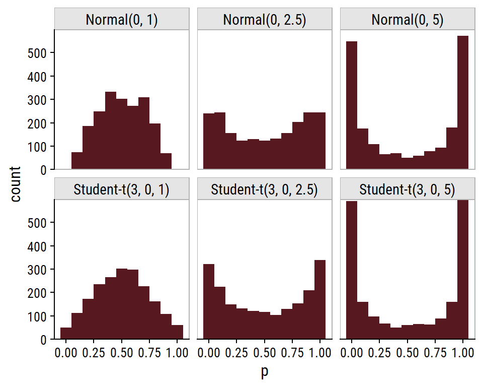
The \(\text{Normal}(0, 5)\) and \(\text{Student-}t(3, 0, 5)\) priors place most of the samples at the extremes (cumulative probabilities of 0 and 100%). The \(\text{Normal}(0, 2.5)\) and \(\text{Student-}t(3, 0, 2.5)\) are sensible default priors because they are fairly uniform in the probability space, although they do have slight peaks at the extremes. The \(\text{Normal}(0, 1)\) and \(\text{Student-}t(3, 0, 1)\) prior distributions are bell-shaped around \(p = 0.5\), and might be appropriate if we have reason to believe that there will be no extreme probabilities.
As for the scale parameter describing the variance in judge-specific random effects, I’ve seen the half-Cauchy distribution recommended:
tibble(scale = c(1, 2.5, 5)) %>%
crossing(x = seq(0, 10, 0.1)) %>%
mutate(
prior = str_c("Half-Cauchy(0, ", scale, ")"),
dens = dcauchy(x, location = 0, scale = scale)
) %>%
ggplot(aes(x, y = dens)) +
geom_line(aes(color = prior), size = 1) +
theme(legend.position = c(0.6, 0.6), axis.ticks.y = element_blank(),
axis.text.y = element_blank())
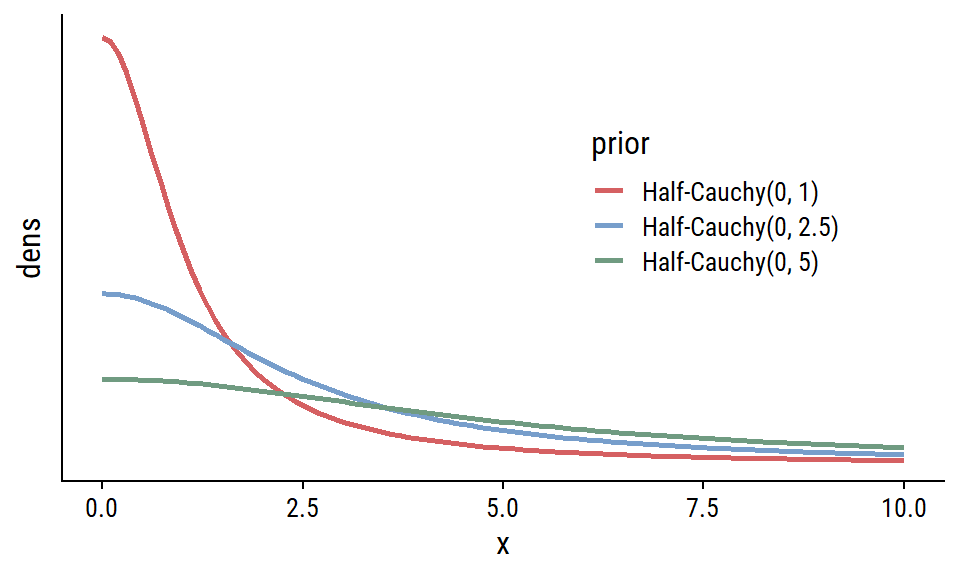
This distribution is fairly conservative, with a long right tail that allows for large values.
I don’t think there is anything wrong with the default priors, but just to show how it is done, I’ll fit the null model with the following:
\[ \begin{align} \text{logit}(p(y_i \leq j)) &= \theta_j - u( \text{judge}_i) \\ \theta_j &\sim \text{Normal}(0, 1.5) \\ u(\text{judge}_i) &\sim \text{Normal}(0, \sigma_u) \\ \sigma_u &\sim \text{Half-Cauchy}(0, 2.5) \end{align} \]
prior_rating_null <- c(
prior(normal(0, 1.5), class = Intercept),
prior(cauchy(0, 2.5), class = sd)
)
brm_rating_null_alt_prior <-
brm(
f_rating_null,
prior = prior_rating_null ,
data = wine,
family = cumulative("logit"),
file = "brm-rating-null-alt-prior"
)
plot(brm_rating_null_alt_prior, ask = FALSE,
variable = "^b_|^sd_", regex = TRUE)
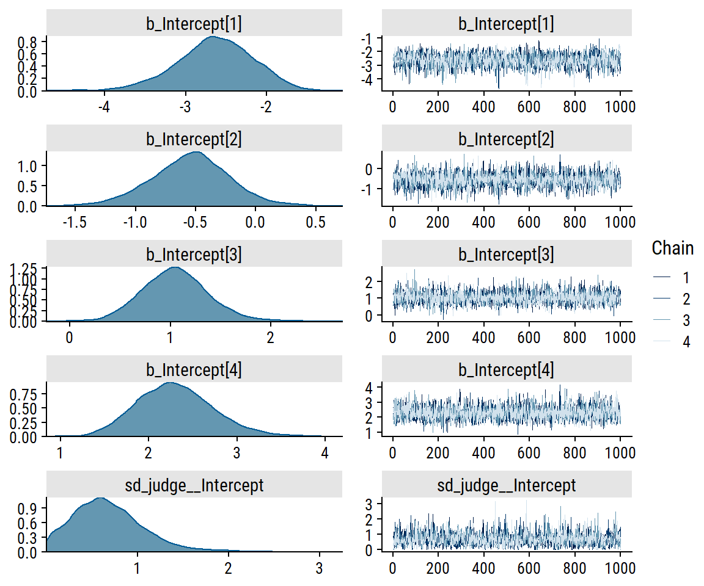
As expected, these priors don’t noticeably improve the model convergence (which was already good). Likewise, the model estimates changed only slightly:
tidyMCMC(brm_rating_null) %>%
mutate(priors = "default priors") %>%
bind_rows(
tidyMCMC(brm_rating_null_alt_prior) %>%
mutate(priors = "alternative priors")
) %>%
filter(!str_starts(term, "r_|prior_|disc")) %>%
transmute(
term,
estimate_se = str_c(round(estimate, 2), " (", round(std.error, 2), ")"),
priors
) %>%
pivot_wider(names_from = priors, values_from = estimate_se) %>%
gt()
| term | default priors | alternative priors |
|---|---|---|
| b_Intercept[1] | -2.76 (0.54) | -2.63 (0.48) |
| b_Intercept[2] | -0.55 (0.36) | -0.53 (0.33) |
| b_Intercept[3] | 1.1 (0.38) | 1.04 (0.33) |
| b_Intercept[4] | 2.4 (0.49) | 2.28 (0.43) |
| sd_judge__Intercept | 0.69 (0.41) | 0.64 (0.39) |
We now add the “treatment” effects of temp and contact:
\[ \begin{align} \text{logit}(p(y_i \leq j)) &= \theta_j - \beta_1 \text{temp}_i - \beta_2 \text{contact}_i - u( \text{judge}_i) \\ \end{align} \]
This introduces two new priors we can specify:
get_prior(f_rating_contact_temp, data = wine, family = cumulative("logit")) %>%
as_tibble() %>%
select(prior, class, coef, group) %>%
print(n = 11)
# A tibble: 11 x 4
prior class coef group
<chr> <chr> <chr> <chr>
1 "" b "" ""
2 "" b "contactyes" ""
3 "" b "tempwarm" ""
4 "student_t(3, 0, 2.5)" Intercept "" ""
5 "" Intercept "1" ""
6 "" Intercept "2" ""
7 "" Intercept "3" ""
8 "" Intercept "4" ""
9 "student_t(3, 0, 2.5)" sd "" ""
10 "" sd "" "judge"
11 "" sd "Intercept" "judge"We know from part 1 that contactyes (\(\beta_1\)) and tempwarm (\(\beta_2\)) are associated with higher ratings, but we shouldn’t be biasing our priors by using the same data we are modeling. Instead, use a weakly regularizing normal distributions centered at 0:
\[ \begin{align} \text{logit}(p(y_i \leq j)) &= \theta_j - \beta_1 \text{temp}_i - \beta_2 \text{contact}_i - u( \text{judge}_i) \\ \beta_1 &\sim \text{Normal}(0, 5) \\ \beta_2 &\sim \text{Normal}(0, 5) \\ \theta_j &\sim \text{Normal}(0, 1.5) \\ u(\text{judge}_i) &\sim \text{Normal}(0, \sigma_u) \\ \sigma_u &\sim \text{Half-Cauchy}(0, 2.5) \end{align} \]
prior_rating_contact_temp <-
c(prior_rating_null,
prior(normal(0, 5), class = b))
brm_rating_contact_temp <-
brm(
f_rating_contact_temp,
prior = prior_rating_contact_temp,
data = wine,
family = cumulative("logit"),
file = "brm-rating-contact-temp-weak-prior"
)
# Also fit using the default priors
brm_rating_contact_temp_default_prior <-
brm(
f_rating_contact_temp,
data = wine,
family = cumulative("logit"),
sample_prior = TRUE,
file = "brm-rating-contact-temp-default-prior"
)
brm_rating_contact_temp
Family: cumulative
Links: mu = logit; disc = identity
Formula: rating ~ 1 + contact + temp + (1 | judge)
Data: wine (Number of observations: 72)
Draws: 4 chains, each with iter = 2000; warmup = 1000; thin = 1;
total post-warmup draws = 4000
Group-Level Effects:
~judge (Number of levels: 9)
Estimate Est.Error l-95% CI u-95% CI Rhat Bulk_ESS
sd(Intercept) 1.14 0.45 0.46 2.20 1.00 1553
Tail_ESS
sd(Intercept) 2226
Population-Level Effects:
Estimate Est.Error l-95% CI u-95% CI Rhat Bulk_ESS
Intercept[1] -1.40 0.57 -2.55 -0.31 1.00 3148
Intercept[2] 1.30 0.53 0.26 2.33 1.00 3604
Intercept[3] 3.66 0.67 2.40 5.02 1.00 2992
Intercept[4] 5.34 0.78 3.88 6.91 1.00 2974
contactyes 1.61 0.47 0.69 2.54 1.00 4020
tempwarm 2.69 0.51 1.72 3.71 1.00 3161
Tail_ESS
Intercept[1] 3209
Intercept[2] 3207
Intercept[3] 2650
Intercept[4] 3058
contactyes 2752
tempwarm 2589
Family Specific Parameters:
Estimate Est.Error l-95% CI u-95% CI Rhat Bulk_ESS Tail_ESS
disc 1.00 0.00 1.00 1.00 NA NA NA
Draws were sampled using sampling(NUTS). For each parameter, Bulk_ESS
and Tail_ESS are effective sample size measures, and Rhat is the potential
scale reduction factor on split chains (at convergence, Rhat = 1).Compare these estimates to those from clmm and with default priors:
clmm2_rating_contact_temp <-
clmm2(
rating ~ contact + temp, random = judge,
data = wine, link = "logistic", Hess = TRUE
)
tab_brm_clmm_rating_contact_temp <- tidyMCMC(brm_rating_contact_temp) %>%
mutate(model = "brm weak priors") %>%
bind_rows(
tidyMCMC(brm_rating_contact_temp_default_prior) %>%
mutate(model = "brm default priors")
) %>%
filter(!str_detect(term, "r_judge|lp__|prior|disc")) %>%
transmute(
term, model,
estimate_se = str_c(round(estimate, 2), " (", round(std.error, 2), ")")
) %>%
bind_rows(
summary(clmm2_rating_contact_temp) %>%
coef() %>%
as_tibble() %>%
mutate(term = c(str_c("b_Intercept[", 1:4, "]"),
"b_contactyes", "b_tempwarm")) %>%
bind_rows(
tibble(
Estimate = as.numeric(clmm2_rating_contact_temp$stDev),
term = "sd_judge__Intercept"
)
) %>%
janitor::clean_names() %>%
transmute(
model = "clmm", term,
estimate_se = ifelse(
!is.na(std_error),
str_c(round(estimate, 2), " (", round(std_error, 2), ")"),
round(estimate, 2)
)
)
) %>%
pivot_wider(names_from = model, values_from = estimate_se)
gt(tab_brm_clmm_rating_contact_temp)
| term | brm weak priors | brm default priors | clmm |
|---|---|---|---|
| b_Intercept[1] | -1.39 (0.57) | -1.7 (0.78) | -1.62 (0.68) |
| b_Intercept[2] | 1.3 (0.53) | 1.45 (0.65) | 1.51 (0.6) |
| b_Intercept[3] | 3.65 (0.67) | 4.17 (0.83) | 4.23 (0.81) |
| b_Intercept[4] | 5.32 (0.78) | 6.06 (0.97) | 6.09 (0.97) |
| b_contactyes | 1.6 (0.47) | 1.85 (0.52) | 1.83 (0.51) |
| b_tempwarm | 2.67 (0.51) | 3.1 (0.6) | 3.06 (0.6) |
| sd_judge__Intercept | 1.08 (0.45) | 1.36 (0.56) | 1.13 |
The estimates from the Bayesian regression with default priors are very close to the frequentist estimates.
But is the model actually a better fit to the data? We can compare them with leave-one-out cross-validation (LOOCV) based on the posterior likelihoods:
loo(brm_rating_contact_temp, brm_rating_contact_temp_default_prior)
Output of model 'brm_rating_contact_temp':
Computed from 4000 by 72 log-likelihood matrix
Estimate SE
elpd_loo -85.2 4.3
p_loo 10.3 0.9
looic 170.4 8.5
------
Monte Carlo SE of elpd_loo is 0.1.
All Pareto k estimates are good (k < 0.5).
See help('pareto-k-diagnostic') for details.
Output of model 'brm_rating_contact_temp_default_prior':
Computed from 4000 by 72 log-likelihood matrix
Estimate SE
elpd_loo -85.3 5.3
p_loo 12.7 1.3
looic 170.5 10.6
------
Monte Carlo SE of elpd_loo is 0.1.
All Pareto k estimates are good (k < 0.5).
See help('pareto-k-diagnostic') for details.
Model comparisons:
elpd_diff se_diff
brm_rating_contact_temp 0.0 0.0
brm_rating_contact_temp_default_prior -0.1 1.1 The output here is the expected log predicted density (elpd_loo), the estimated number of effective parameters (p_loo), and the LOOCV information criteria (looic). Lower values of looic indicate better model fit. These are essentially equal, so the weak priors have not made a large difference to the model fit.
Here are what Bürkner and Vuorre (2019) had to say about the adjacent-category class of ordinal models.
Mathematically:
\[ \text{Pr}(Y = k | Y \in \{k, k+1\}) = F(\tau_k) \]
Suppose the latent variable \(\tilde{Y}_2\) is standard normally distributed with distribution function \(\Phi\), and \(\tau_2\) = 1. Then the probability of choosing \(Y\) = 2 over \(Y\) = 3 would be written as:
\[
\text{Pr}(Y = 2 | Y \in \{2, 3\}) = \Phi(\tau_2) = \Phi(1) = 0.84
\] Try fitting the null wine rating model with the acat family in brms:
How do these estimates compare to the cumulative model?
tidyMCMC(brm_rating_contact_temp_default_prior) %>%
mutate(model = "cumulative") %>%
bind_rows(
tidyMCMC(brm_rating_contact_temp_default_prior_acat) %>%
mutate(model = "adjacent-category")
) %>%
filter(!str_detect(term, "r_judge|lp__|prior|disc")) %>%
transmute(
term, model,
estimate_se = str_c(round(estimate, 2), " (", round(std.error, 2), ")")
) %>%
pivot_wider(names_from = model, values_from = estimate_se) %>%
gt()
| term | cumulative | adjacent-category |
|---|---|---|
| b_Intercept[1] | -1.7 (0.78) | -1.28 (0.67) |
| b_Intercept[2] | 1.45 (0.65) | 1.19 (0.57) |
| b_Intercept[3] | 4.17 (0.83) | 3.36 (0.8) |
| b_Intercept[4] | 6.06 (0.97) | 4.02 (1.03) |
| b_contactyes | 1.85 (0.52) | 1.32 (0.4) |
| b_tempwarm | 3.1 (0.6) | 2.3 (0.53) |
| sd_judge__Intercept | 1.36 (0.56) | 1 (0.43) |
brms has a convenient function conditional_effects for quickly plotting estimates. For example, the effect of contact:
ce_rating_contact_temp_default_prior_acat <-
conditional_effects(brm_rating_contact_temp_default_prior_acat,
categorical = TRUE, re_formula = NA, ask = FALSE)
ce_rating_contact_temp_default_prior <-
conditional_effects(brm_rating_contact_temp_default_prior,
categorical = TRUE, re_formula = NA, ask = FALSE)
ce_rating_contact_temp_default_prior_acat$`contact:cats__` %>%
mutate(model = "adjacent-category") %>%
bind_rows(
ce_rating_contact_temp_default_prior$`contact:cats__` %>%
mutate(model = "cumulative")
) %>%
ggplot(aes(x = contact, y = estimate__, color = effect2__)) +
geom_point(position = position_dodge(1), size = 3) +
geom_linerange(aes(ymin = lower__, ymax = upper__),
position = position_dodge(1), size = 1) +
facet_wrap(~model) +
scale_color_viridis_d() +
labs(y = "Estimated probabilities", color = "rating")
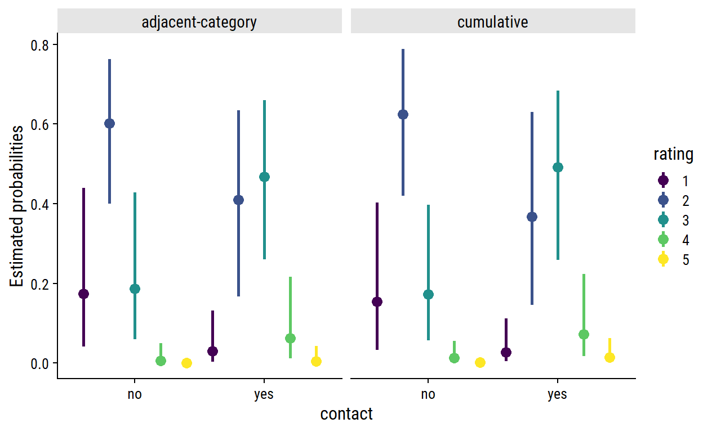
In all of the models specified so far, all fixed effects were presumed to affect all response categories equally. For example, the effect of temp = warm had a mean effect of \(\beta_1\) = 2.67 on the thresholds \(\theta_j\), for all \(j = 1, 2, 3, 4\).
This may not be an appropriate assumption. For example, temp warm might have little relation to the highest rating, but it may strongly predict ratings of 3 relative to 1 or 2.
If this is a possibility, then we can model the predictor as having a category-specific effect by estimating \(K-1\) coefficients for it. The reason we’ve introduced the adjacent-category model is that it is straightforward to incorporate these effects (sequential models work as well). Cumulative models, however, can lead to negative probabilities, and so should be avoided when using category-specific effects.
Fit the adjacent-category model with category-specific effects on temp:
\[ \begin{align} \text{logit}(p(y_i \leq j)) &= \theta_j - \beta_{1j} \text{temp}_i - \beta_2 \text{contact}_i - u( \text{judge}_i) \\ \text{logit}(p(y_i \leq j)) &= \theta_j - \beta_{1j} \text{temp}_i - u( \text{judge}_i) \\ \end{align} \]
There were many divergent transitions, which is clear from the ugly trace plots:
plot(brm_rating_cs_temp_default_prior_acat, ask = FALSE,
variable = "^b_|^sd_", regex = TRUE)
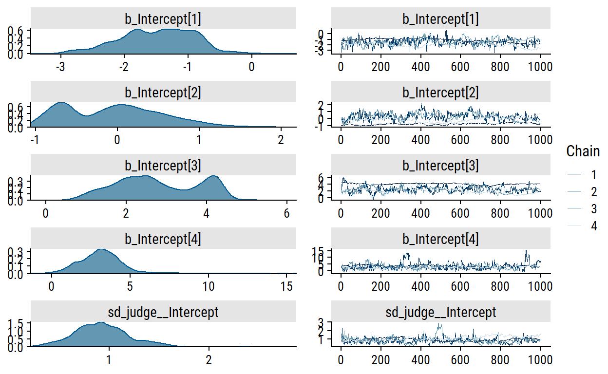
Most of the divergence is coming from estimating the lowest coefficient \(\beta_{11}\) (bcs_tempwarm[1]). I will try some regularizing priors (previously defined) and increasing the adapt_delta argument:
brm_rating_cs_temp_weak_prior_acat <-
brm(
f_rating_cs_temp,
prior = prior_rating_contact_temp,
family = acat(link = "logit"),
data = wine,
file = "brm-rating-cs-temp-weak-prior-acat",
control = list(adapt_delta = 0.9)
)
plot(brm_rating_cs_temp_weak_prior_acat, ask = FALSE,
variable = "^b_|^sd_", regex = TRUE)
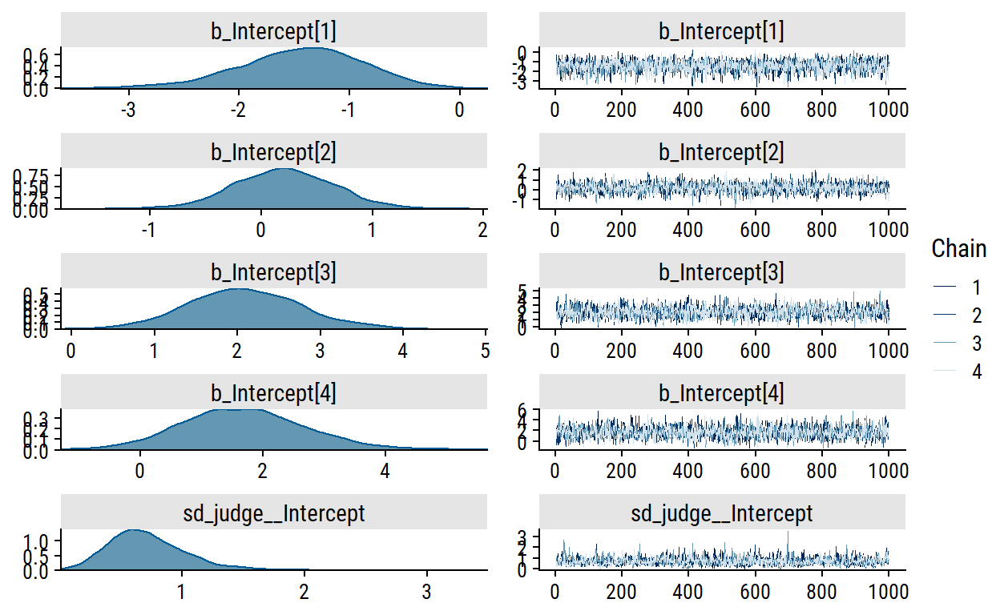
This makes a huge difference. Now compare this to a model without category-specific effects:
ce_rating_cs_temp_weak_prior_acat <-
conditional_effects(brm_rating_cs_temp_weak_prior_acat,
categorical = TRUE, re_formula = NA, ask = FALSE)
brm_rating_temp_weak_prior_acat <-
brm(
rating ~ 1 + temp + (1|judge),
prior = prior_rating_contact_temp,
family = acat(link = "logit"),
data = wine,
file = "brm-rating-temp-weak-prior-acat"
)
ce_rating_temp_weak_prior_acat <-
conditional_effects(brm_rating_temp_weak_prior_acat,
categorical = TRUE, re_formula = NA, ask = FALSE)
ce_rating_temp_weak_prior_acat$`temp:cats__` %>%
mutate(model = "constant effects") %>%
bind_rows(
ce_rating_cs_temp_weak_prior_acat$`temp:cats__` %>%
mutate(model = "category-specific effects")
) %>%
ggplot(aes(x = temp, y = estimate__, color = effect2__)) +
geom_point(position = position_dodge(1), size = 3) +
geom_linerange(aes(ymin = lower__, ymax = upper__),
position = position_dodge(1), size = 1) +
facet_wrap(~model) +
scale_color_viridis_d() +
labs(y = "Estimated probabilities", color = "rating")
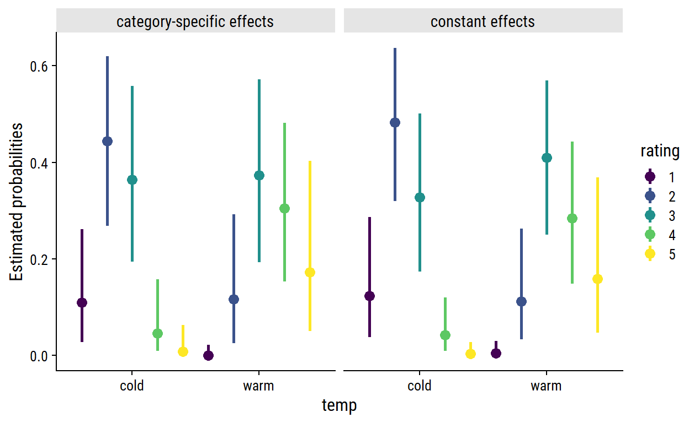
Or, put the probabilities for each model side-by-side, along with the empirical probabilities:
ce_rating_temp_weak_prior_acat$`temp:cats__` %>%
mutate(model = "constant effects") %>%
bind_rows(
ce_rating_cs_temp_weak_prior_acat$`temp:cats__` %>%
mutate(model = "category-specific effects")
) %>%
ggplot(aes(x = effect2__, y = estimate__, color = model)) +
geom_point(position = position_dodge(0.5), size = 3) +
geom_linerange(aes(ymin = lower__, ymax = upper__),
position = position_dodge(0.5), size = 1) +
geom_point(
data = wine %>%
group_by(temp, rating) %>%
tally() %>%
group_by(temp) %>%
mutate(p = n / sum(n), model = "empirical"),
aes(x = rating, y = p, color = model), size = 3
) +
facet_wrap(~temp, ncol = 1) +
labs(y = "Estimated probabilities", x = "Rating", color = "model")
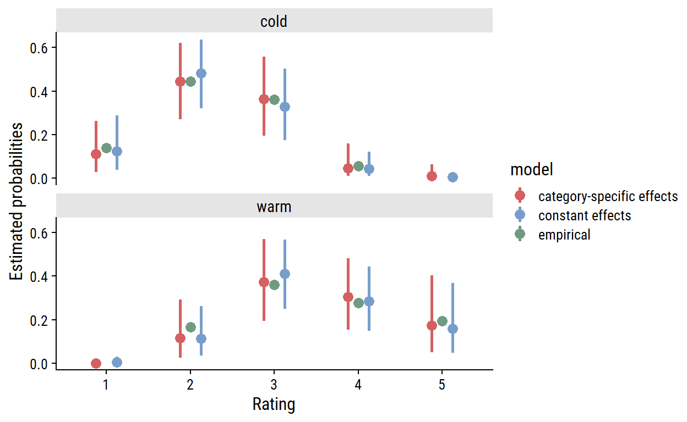
The category-specific effects have not made a notable difference to the estimated probabilities. The constant effects model may even be better, meaning that it is a valid assumption for these data, and category-specific effects are excessive.
The brms package is an awesome tool for fitting Bayesian models in Stan. Though it requires a more thoughtful (what are my priors?) and slow (Markov chain Monte Carlo can take a long time) approach, I find Bayesian inference far more intuitive than frequentest null hypothesis significance testing.
For instance, consider the cumulative link regression with contact and temp:
| term | brm weak priors | clmm |
|---|---|---|
| b_Intercept[1] | -1.39 (0.57) | -1.62 (0.68) |
| b_Intercept[2] | 1.3 (0.53) | 1.51 (0.6) |
| b_Intercept[3] | 3.65 (0.67) | 4.23 (0.81) |
| b_Intercept[4] | 5.32 (0.78) | 6.09 (0.97) |
| b_contactyes | 1.6 (0.47) | 1.83 (0.51) |
| b_tempwarm | 2.67 (0.51) | 3.06 (0.6) |
| sd_judge__Intercept | 1.08 (0.45) | 1.13 |
With the Bayesian model, not only do we have the full posterior to work with, we can make conclusions like:
Under weakly regularizing priors, temperature probably affects wine rating \(\beta_{\text{temp}}\) = 2.67, 95% credible interval = 1.72, 3.71.
Versus the frequentist model:
There is evidence against the null hypothesis that \(\beta_{\text{temp}} = 0\), \(p < 0.001\). The point estimate from the model was 3.06, 95% confidence interval = 1.9, 4.23.
With frequentist inference, we find the probability of the data assuming the null hypothesis is true, \(P(\text{data}|H_0)\). With Bayesian inference, we find the probability of a hypothesis given the data, \(P(H|\text{data})\), which means we don’t even have to consider the “null world.” This makes interpretation much easier.
setting value
version R version 4.1.2 (2021-11-01)
os Windows 10 x64
system x86_64, mingw32
ui RTerm
language (EN)
collate English_Canada.1252
ctype English_Canada.1252
tz America/Curacao
date 2022-01-10 Local: main C:/Users/tdunn/Documents/tdunn
Remote: main @ origin (https://github.com/taylordunn/tdunn)
Head: [da88cbd] 2022-01-08: Build on cloudFor attribution, please cite this work as
Dunn (2020, March 17). tdunn: Ordinal regression in R: part 2. Retrieved from https://tdunn.ca/posts/2020-03-17-ordinal-regression-in-r-part-2/
BibTeX citation
@misc{dunn2020ordinal,
author = {Dunn, Taylor},
title = {tdunn: Ordinal regression in R: part 2},
url = {https://tdunn.ca/posts/2020-03-17-ordinal-regression-in-r-part-2/},
year = {2020}
}